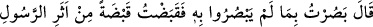
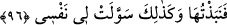

meyleder. Şu halde siz, mallarınızı semaya bırakın ki gönülleriniz oraya yönelsin” Yani
mallarınızı Allah uğruna tasadduk edin. Kendiniz bu dünyadan göçmeden önce
mallarınızı âhiret yolunda harcayın. Çünkü âhiret yurdu, daha hayırlı ve daha yücedir.
“Mal”a bu adın verilmesinin sebebi, maksadlarına ulaşma ve ihtiyaçlarını giderme
hususunda kalplerin bizzat ona meyletmesi sebebiyledir.
Mesnevî’de der ki:
Dünya malı zayıf kuşların tuzağıdır...
Âhiret mülkü, yüce kuşların tuzağı!
Şimdi siz, malın, mülkün esirisiniz...
Mala sahip olan; mala esir olmayan kişidir.
96. O da: “Ben, onların görmediklerini gördüm. Zira, o elçinin izinden bir avuç
(toprak) alıp onu (erimiş mücevheratın içine) attım. Bunu böyle nefsim bana hoş
gösterdi.” dedi.
“O da:” Sâmirî de, Mûsâ (a.s.)’a cevap vermek üzere: “Ben, onların görmediklerini
gördüm.” Sâmirî, Cebrâil (a.s.)’ı ata binmiş olarak görmüştü. Atın ayağı yolda kupkuru
bir yere bassa, onun geçtiği yerden yemyeşil otlar bitiyordu. İşte Sâmirî bunda bir iş
olduğunu anladı ve onun bastığı yerden bir avuç toprak aldı.
Tefsîr-i Kebîr’de şöyle der: “Sâmirî, denizin yarıldığı günde Fir’avn oraya atını
sürdüğü vakit, bir kısrağa binip de denizi yaran Cibril’i ve onu taşıyan kısrağını
görmüştü.” Diğer tefsirlerde ise şu görüşe yer verilmiştir: “Sâmirî Cibril’in atını, Hz.
Mûsâ’yı Tûr’a götürdüğü vakit görmüştür.”
Celâleyn’de şöyle der: “Mûsâ (a.s.), Sâmirî’ye: “Bu senin yaptığın nedir?” dedi. O
da: “Hayat atının üzerinde iken Cebrâil’i gördüm. İçimden onun izinden bir avuç toprak
almak geldi. Onun izinden aldığım toprağı bir şeye katarsam, ona kan, et ve rûh (hayat)
veriyordu. Kavminin senden kendileri için (diğer milletlerin ilahları/putları) gibi bir
ilah yapmanı istedikleri zaman, nefsim bana böyle (böğüren buzağı heykeli) yapmayı
hoş gösterdi.” dedi.
“Zira, o elçinin izinden bir avuç (toprak) alıp” Yani âlemlerin Rabbinin sana
gönderdiği elçinin atının ayak bastığı yerden bir avuç toprak aldım. Buradaki attan
murad, Cebrâil’in hayat atıdır. Sâmirî, “Cebrâil’i ya da Rûhu’l-kudüs’ü gördüm.”
dememiştir. Çünkü o, gördüğünün Cebrâil (a.s.) olduğunu bilmiyordu.
“Onu” aldığım bir avuç toprağı erimiş olan mücevherâtın içine veya buzağının ağzına
“attım” Böylece olan oldu. Buzağı ses çıkarmaya başladı.